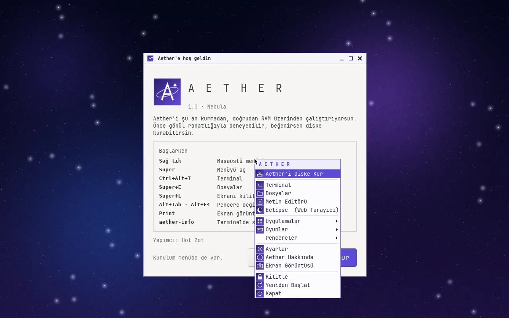
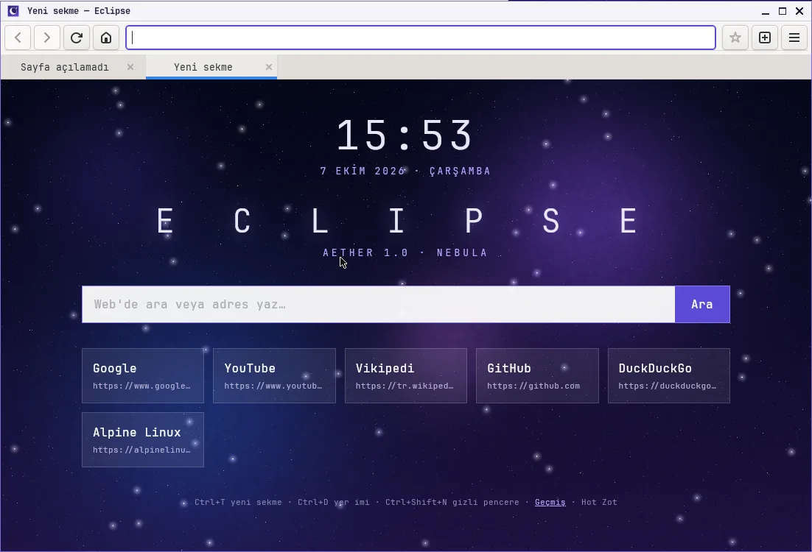
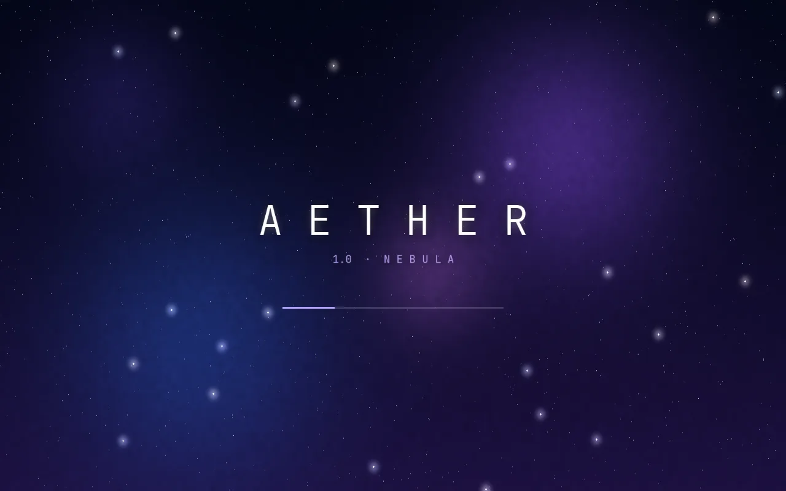
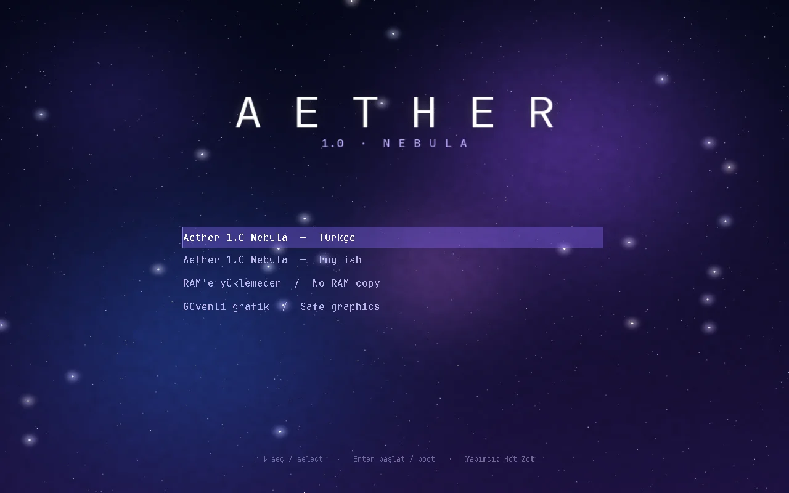
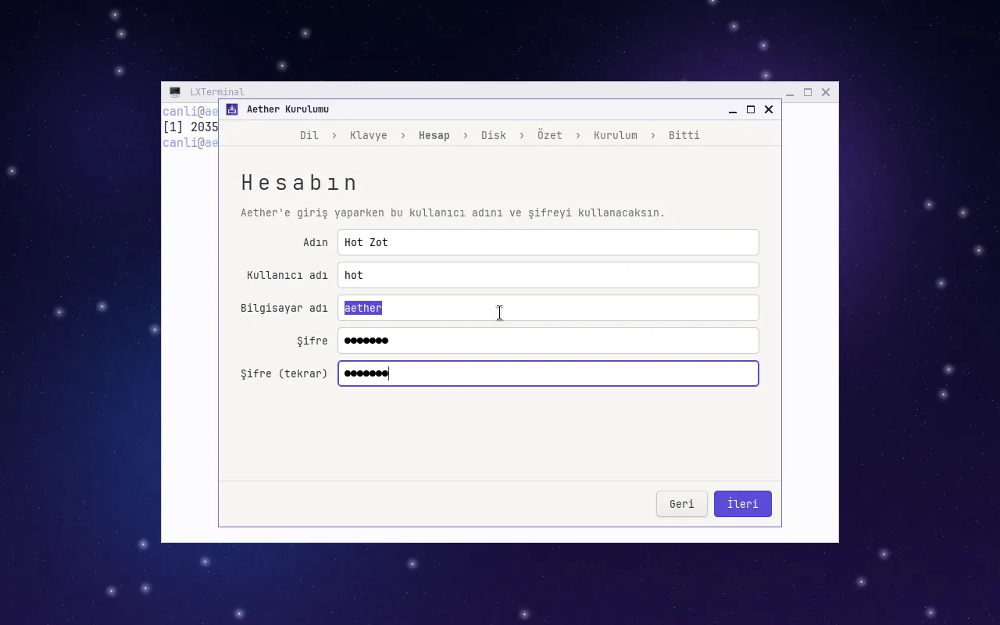
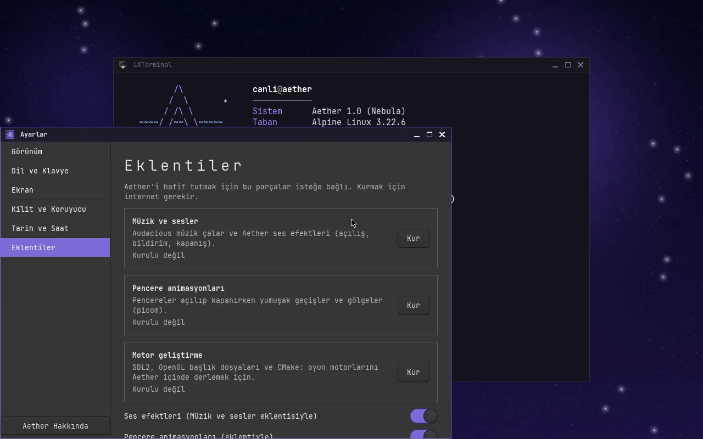
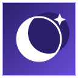

Küçük, hızlı ve Türkçe bir Linux.
Aether, Alpine Linux üzerine kurulu, 370 MB'lık bir işletim sistemi. Önce RAM'den dene, beğenirsen birkaç tıkla diske kur.

- ISO
- 370 MB
- Çekirdek
- Linux 6.12 LTS
- Taban
- Alpine 3.22
- Masaüstü
- Openbox
- Mimari
- x86_64
- Açılış
- BIOS + UEFI
Gereken her şey var, fazlası yok.
Aether'in uygulamalarının çoğu ona özel yazıldı. Ağır parçalar isteğe bağlı eklentiler olarak duruyor.
Kurulum sihirbazı
Dil, klavye, hesap ve disk seçimi. Kurulum bir sanal makinede birkaç dakika sürer.
Eclipse tarayıcı
Sekmeler, yer imleri, geçmiş ve gizli pencere. JavaScript destekli WebKit motoru.
Açık ve koyu tema
Keskin köşeli, sade bir tasarım. Tema, Ayarlar'dan değiştirince anında uygulanır.
Türkçe ve İngilizce
Türkçe Q, Türkçe F ve ABD klavyesi. Dil açılış menüsünden ya da Ayarlar'dan seçilir.
Geliştiriciler için
gcc, g++ ve make hazır gelir. SDL2 ve OpenGL başlıkları tek tıkla kurulur.
Küçük ayrıntılar
Mayın Tarlası, yıldız alanı ekran koruyucusu, kilit ekranı ve terminalde aether-info.
Gerçek ekran görüntüleri.
Hepsi bir sanal makinede çalışan Aether 1.0'dan alındı.





Aether ve Eclipse.
İkisi de ücretsiz. İndirdiğin dosyanın bozulmadığını SHA-256 özetiyle doğrulayabilirsin.
Aether 1.0
İşletim sistemi · ISO kalıbı
- Dosya
- aether-1.0-nebula.iso
- Boyut
- 370 MB (388.167.680 bayt)
- Gereksinim
- 64 bit işlemci, 2 GB RAM, 10 GB disk
- Önerilen
- VirtualBox, VMware veya QEMU
4c39291651189f02c48a4a20749b7d972dfbc11af0663dd5f7e9ad2f8766d0f1

Eclipse
Web tarayıcı · Windows sürümü
- Dosya
- Eclipse-Windows.zip
- Boyut
- 530 KB
- Gereksinim
- Windows 10 veya 11, 64 bit
- Motor
- Microsoft Edge WebView2 (Windows'ta yerleşik)
52edfa6eaa2979eab890d00bdb10970d13e77d1c55af4d1380ec6185b1373d69
Zip'i aç ve Eclipse.exe'yi çalıştır. Linux sürümü Aether'in içinde hazır gelir.
VirtualBox'ta beş adımda.
Aether şimdilik sanal makineler için hazırlandı ve onlarda test edildi.
- Yeni sanal makine oluştur. Tür: Linux, sürüm: Other Linux (64-bit).
- Kaynakları ayarla. En az 2 GB bellek ve 10 GB sanal disk ver.
- ISO'yu tak. Ayarlar › Depolama bölümünde
aether-1.0-nebula.iso'yu CD sürücüsüne ekle ve başlat. - Canlı dene. Aether RAM'e yüklenir ve şifresiz açılır. Beğenirsen Diske Kur'a bas.
- Yeniden başlat. Kurulum bitince ISO'yu çıkar. Giriş ekranında kendi hesabınla oturum aç.
Ekran siyah kalırsa
Açılışta sistem RAM'e kopyalanırken bir dakika kadar bekleyebilir. Daha uzun sürerse:
- Önyükleme menüsünden Güvenli grafik seçeneğiyle başlat.
- VirtualBox'ta Ayarlar › Ekran bölümünde 3D hızlandırmayı kapat.
- VirtualBox penceresinin altında kaplumbağa simgesi görüyorsan Windows'ta Hyper-V açık demektir; sanal makine çok yavaş çalışır.
Sorular.
Aether ücretsiz mi?
Evet. Aether tamamen özgür yazılımlar üzerine kurulu ve ücretsiz dağıtılıyor.
Gerçek bir bilgisayara kurabilir miyim?
ISO, BIOS ve UEFI ile açılır ve bir USB belleğe yazılabilir. Ancak Aether yalnızca sanal makinelerde test edildi. Gerçek donanımda ekran kartı, Wi-Fi ve ses sürücüleri eksik olabilir.
Canlı oturumun şifresi ne?
Canlı oturum şifresizdir. Diske kurarken kendi kullanıcı adını ve şifreni belirlersin.
Sistemi nasıl güncellerim?
Terminalde aether-guncelle yaz. Paketler Alpine Linux depolarından güncellenir.
Neden bu kadar küçük?
Aether, Docker dünyasının en küçük dağıtımı Alpine Linux'u temel alır. Müzik çalar ve pencere animasyonları gibi parçalar isteğe bağlı eklentiler olarak gelir.